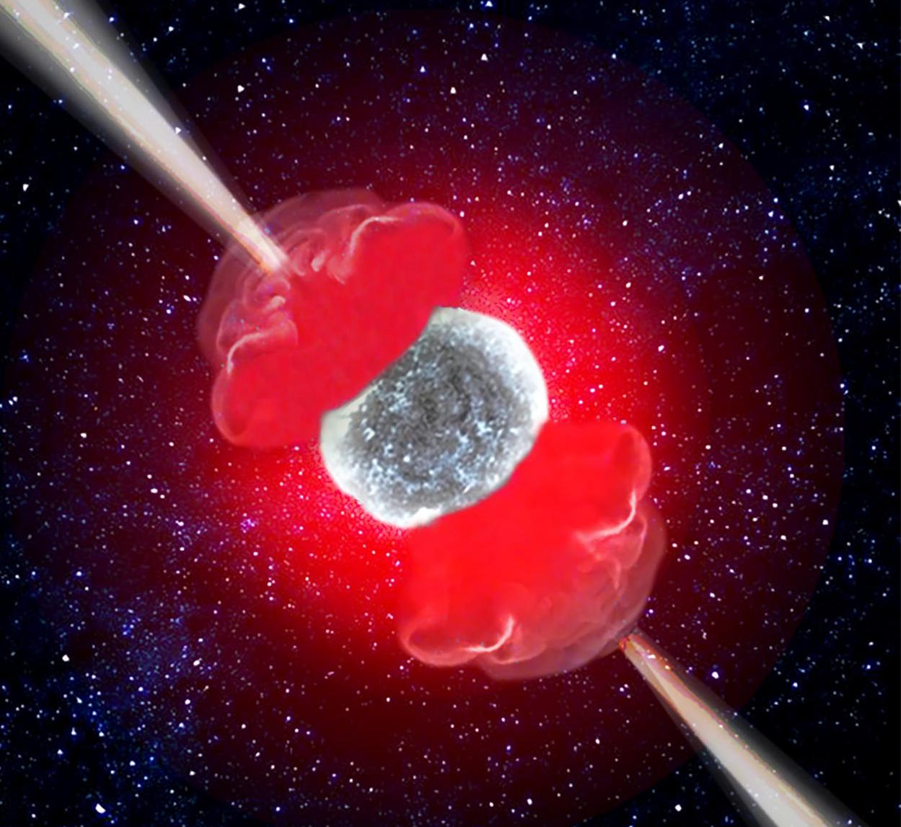
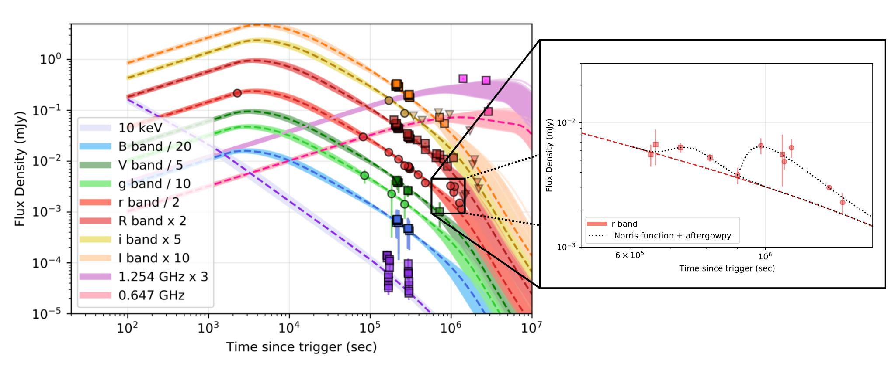
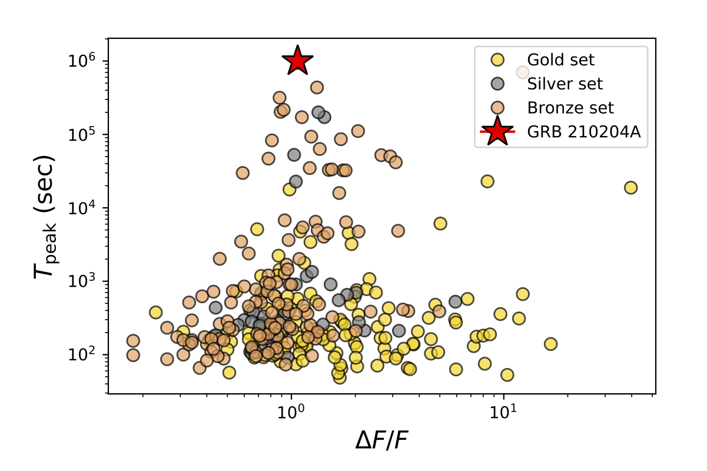

The Ghost of a Star Screams 6 Days After Its Death
Dying heavy stars forms black holes and sometimes emit jets, producing very narrow-angle flashes of gamma rays known as Gamma-Ray Bursts (GRBs). This article summarises the findings from the follow-up of such a GRB 210204A. The GRB showed typical afterglow decaying behaviour while seen in optical bands for up to a week. However, about a week later, we detected some unusual brightening in the emission from this GRB. We investigate possible causes for this flaring and conclude that the most likely cause is a refreshed shock in the jet. The high energy properties suggest that GRB 210204A might not have any special properties that caused late-time flaring. Our analysis of the GRB 210204A shows that the late time bump in the light curve is likely due to the late time flaring activity. The flare of GRB 210204A is the latest flare detected to date.
A certain class of massive stars end their life in a violent explosion. As these massive stars end their life, they sometimes launch powerful jets during this process (~1.3 out of every 100) as if they are screaming as they take their last breath. These jets are very narrow-angle flashes of gamma rays known as Gamma-Ray Bursts (GRBs). GRBs were discovered accidentally in 1967 while Vela satellites were looking for traces of nuclear tests on Earth and rather detected a very short duration burst (~10 sec) of gamma rays coming from space. Within a few years, astronomers were able to conclude that these events do not belong to our neighbourhood, nor to our solar system, nor to our Galaxy. GRBs are extragalactic and are detected from all directions in the universe. These jets are extremely powerful and emit as much energy as the Sun would emit in its entire lifetime.
Over the last 20 years, various gamma-ray satellites have baeen launched to study these events. To date, we have detected over five thousand GRB events. The study of the full sample suggests that there exist two types of these GRBs: 1) Short Gamma-ray Bursts and 2) Long Gamma-ray bursts. As the name suggests, Short GRBs are very short in duration (less than 2 seconds). Compact object merger events are mainly responsible for the majority of these bursts. These are mainly found in the outskirts of elliptical galaxies, where there is a high population of compact binary objects. On the other hand, Long Gamma-ray bursts originate from the death of massive stars. Arms of spiral galaxies where new stars are formed are the common sites of Long GRBs. In such regions, new stars are born and die (usually as a supernova) very quickly and thus have higher chances of being a promising site of Long GRBs.
On 4th Feb 2021, one such event, ‘GRB 210204A’, was detected by various gamma-ray satellites, including the first Indian multi-wavelength astronomy satellite ‘AstroSat’. A team of Indian astronomers studied this unusual event to explain its behaviour.

Figure 1: An artistic impression of Gamma-ray burst. Credits: Anna Serena Esposito
GRBs are among the brightest electromagnetic events in the Universe since the Big Bang. These bursts are highly energetic flashes of gamma rays and radiate ~1051-53 erg of energy within a few seconds. Interaction of these jets with the nearby interstellar medium (ISM) creates an afterglow that shines in all electromagnetic bands. As an analogy, you can think of the main GRB jet as burning coal with flames and the remaining embers as the afterglow, which shines for a longer time. The afterglow usually becomes fainter with time as the central engine stops. However, in some cases, a re-brightening in the afterglow is seen due to chaotic central engines. Such events are typically seen between seconds to hours after the main burst.
GRB 210204A started looking like an ordinary GRB - steadily fading for a few days. But, after ~7 days, it showed rebrightening by a magnitude, not once but twice. This is very unusual for GRBs as there is no way a central engine could be active at this time. It is like a Diwali firecracker that goes boom and shows flashes again after an hour when no one is expecting it to do so.

Figure 2 shows the luminosity decline (light curve) of GRB 210204A based on data from various Indian facilities. The re-brightening at ~12 days after the event is clear in the inset image when it deviates significantly from the expected power-law behaviour (red-dashed line).
A team of astronomers from the Indian Institute of Technology Bombay (IITB), Indian Institute of Astrophysics Bengaluru (IIA), Aryabhatta Research Institute of Observational Sciences (ARIES) and National Centre for Radio Astrophysics (NCRA), led by Harsh Kumar, PhD student at the Department of Physics of IITB, came together, with other international collaborators, to study GRB 210204A. They used various Indian facilities like the GROWTH-India Telescope (GIT), Himalayan Chandra Telescope (HCT), Devasthal Optical Telescope (DOT) and Devasthal Fast Optical Telescope (DFOT) for optical data, AstroSat for gamma-ray data and Giant Metrewave Radio Telescope (GMRT) for radio data to find plausible reasons behind the re-brightening of the afterglow.

Figure 3 shows a comparison of the re-brightening time (along the y-axis) and relative flux of re-brightening in GRB 210204A, marked in red, with previously known GRB re-brightening events. It clearly indicates that GRB 210204A is the most delayed flaring detected so far.
The authors detected the most delayed flaring ever from a GRB event, explained as being caused by “Refreshed Shock”, where two shells with different speeds that were emitted almost simultaneously collided at later times. The findings are highly significant as they highlight complex behaviour in GRB events. This research, published in the Monthly Notices of the Royal Astronomical Society (MNRAS) journal, emphasised late-time monitoring and the need for multi-wavelength data to understand the nature of these events in further detail.
Original paper: The long-active afterglow of GRB 210204A: Detection of the most delayed flares in a Gamma-Ray Burst
First Author: Harsh Kumar
Co-authors: Rahul Gupta, Divita Saraogi, Tomás Ahumada, Igor Andreoni, G.C. Anupama, Amar Aryan, Sudhanshu Barway, Varun Bhalerao, Poonam Chandra, Michael W. Coughlin, Dimple, Anirban Dutta, Ankur Ghosh, Anna Y. Q. Ho, E. C. Kool, Amit Kumar, Michael S. Medford, Kuntal Misra, Shashi B. Pandey, Daniel A. Perley, Reed Riddle, Amit Kumar Ror, Jason M. Setiadi & Yuhan Yao
First author’s Institution: Indian Institute of Technology Bombay (IITB); Main Gate Rd, IIT Area, Powai, Mumbai, Maharashtra 400076